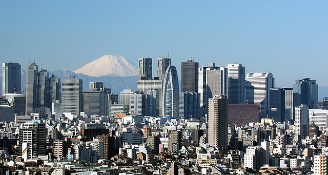

London

London is the capital city of England. It is the most populous city in the United Kingdom, with a metropolitan area of over 13 million inhabitants.
Standing on the River Thames, London has been a major settlement for two millennia, its history going back to its founding by the Romans, who named it Londinium.
Tokyo

Tokyo is the capital of Japan and one of the most populous cities in the world. It is a vibrant metropolis that blends ultramodern technology with rich cultural heritage. Famous for its towering skyscrapers, bustling shopping districts, and historic temples, Tokyo offers a unique mix of tradition and innovation.
Key attractions include the historic Senso-ji Temple, the futuristic Shibuya Crossing, and the iconic Tokyo Tower. The city is also known for its diverse cuisine, from sushi and ramen to Michelin-starred dining. With its efficient public transportation and endless entertainment options, Tokyo is a must-visit destination.
 Paris, the capital of France, is known as the "City of Light" and a global center for art, fashion, and culture. It is famous for its iconic landmarks, such as the Eiffel Tower, the Louvre Museum, and Notre-Dame Cathedral. The city's charming streets, elegant architecture, and vibrant café culture make it a romantic and timeless destination.
Paris, the capital of France, is known as the "City of Light" and a global center for art, fashion, and culture. It is famous for its iconic landmarks, such as the Eiffel Tower, the Louvre Museum, and Notre-Dame Cathedral. The city's charming streets, elegant architecture, and vibrant café culture make it a romantic and timeless destination.